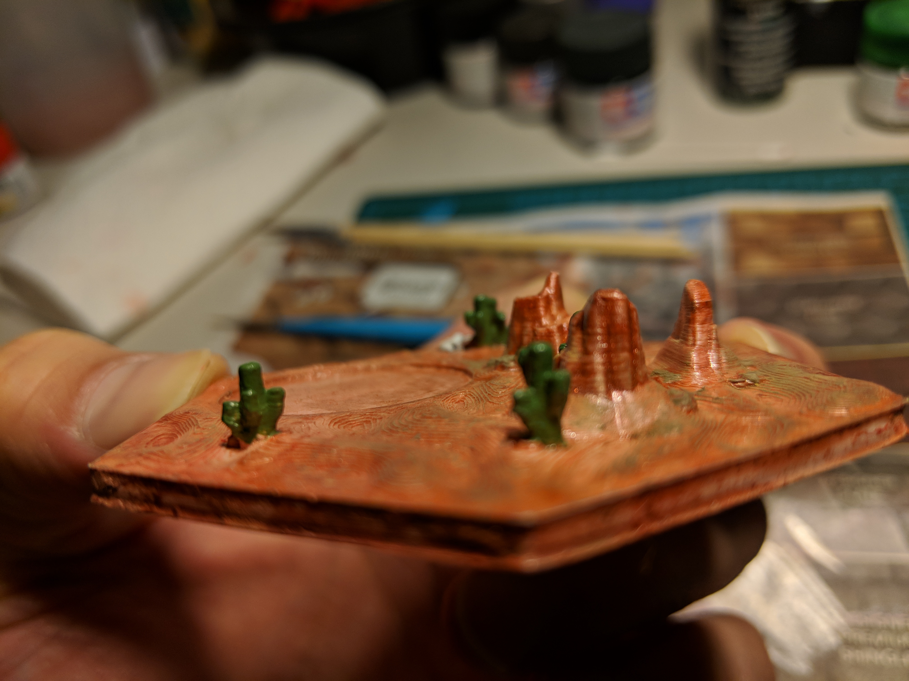
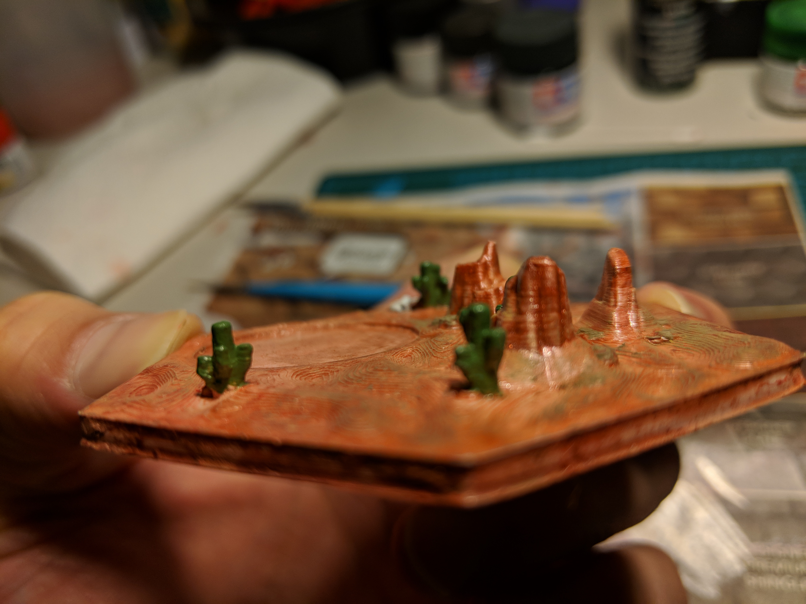

3D print and LED project
Hello, my name is Anh, I like making cool stuff. I am currently working on a 3D printed Catan set, I plan to rig up the Tiles wirelessly to bluetooth so they can trigger LED lights when the dice are rolled. This is a log of my project. I print with an Ultimaker 2+ Extended
The Cura files are found Here I claim no regret on the beautiful craftsmanship that Dakanza put together
I handpaint the tiles and this is now mostly my painting gallery. I will keep logging this project including the tech, the code that I write, photos wiring/soldering the lights, working the bluetooth BLEs.
My work is focused on Bluetooth Low Energy beacon solutions; so I can get the firmware/technology to do this little project. (including building the dice)
Here's the Github
First im building a quick image gallery using JS but heres some nice pics as I wait for paint to dry :P


 
